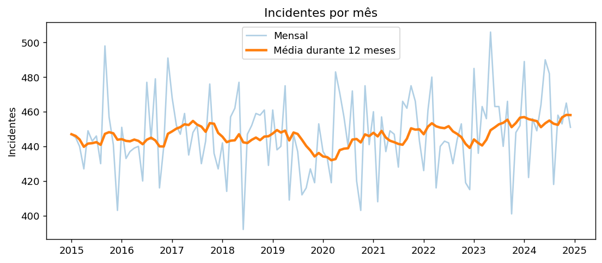
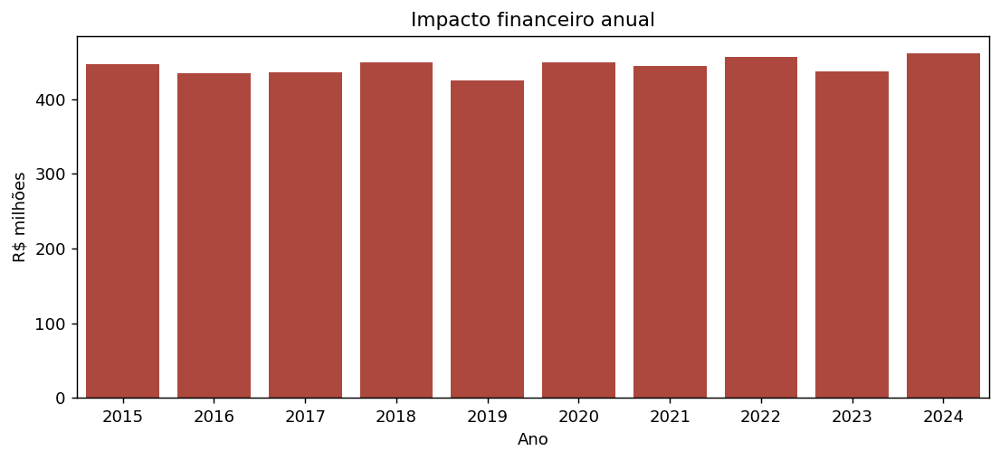
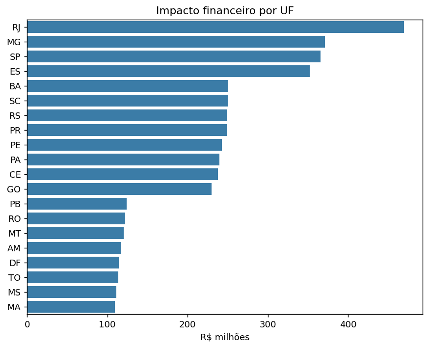
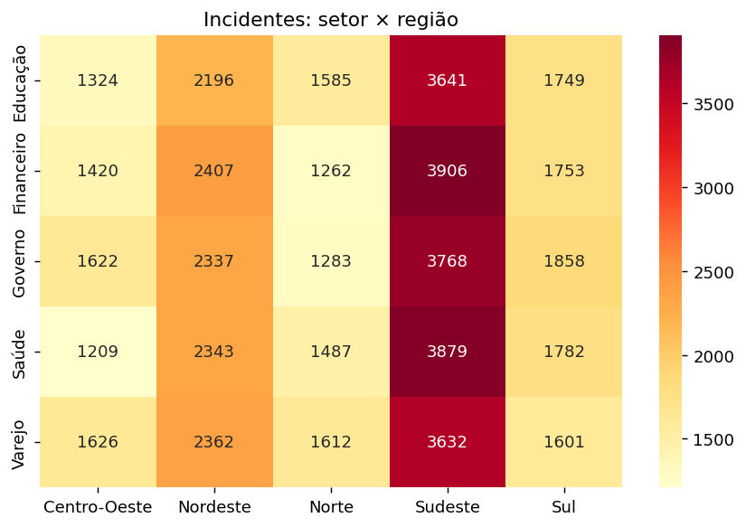
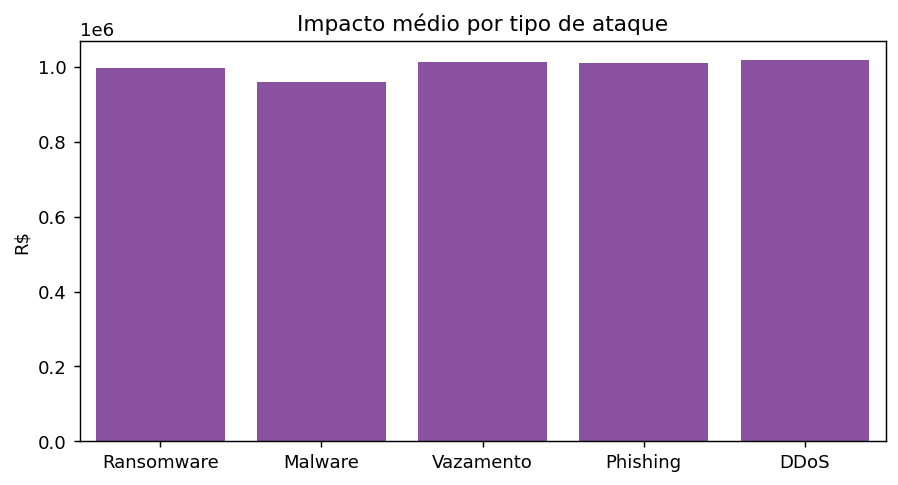
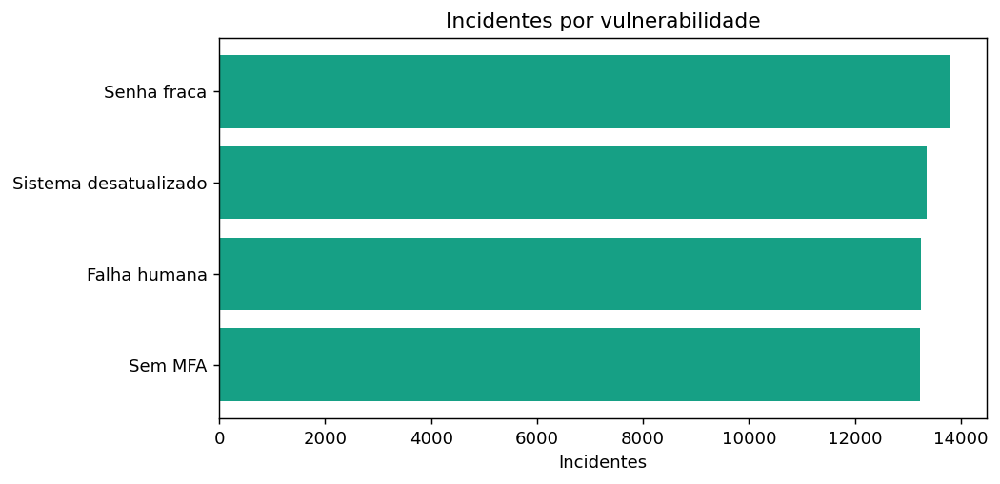
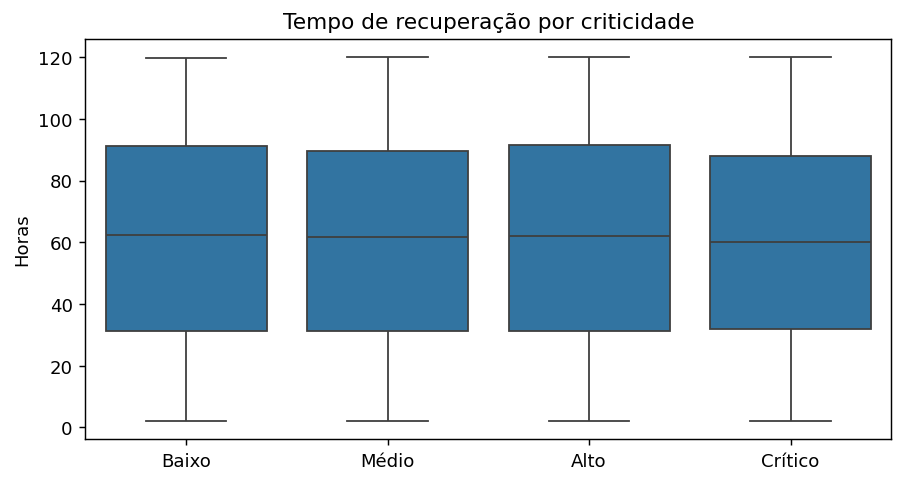
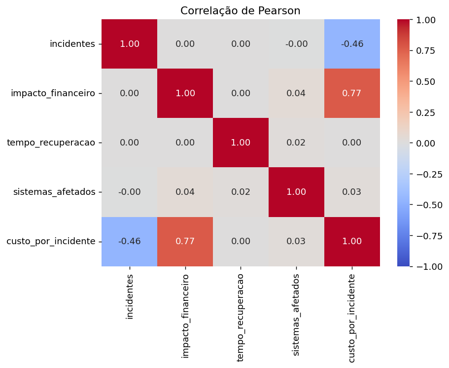

O problema
Ataques como ransomware, phishing e DDoS geram perdas financeiras e interrompem serviços essenciais. Este projeto investiga onde, como e com que custo os incidentes ocorrem e quais vulnerabilidades mais se repetem, para apoiar decisões de prevenção.
Principais números
53.644incidentes registrados
R$ 4,44 biimpacto financeiro total
R$ 82,8 milcusto médio por incidente
60,9 hrecuperação média
33,4%casos resolvidos
Base de dados
4.440 registros mensais (2015–2024), 20 UFs, 5 regiões, 5 setores, 5 tipos de ataque e 4 vulnerabilidades. Base simulada, sem valores nulos ou duplicados.
Visualizações








Conclusão
- Senhas fracas, sistemas desatualizados, falha humana e falta de MFA têm pesos semelhantes — todas merecem ação.
- Apenas ~33% dos incidentes estão resolvidos; o tempo de resposta é um ponto crítico.
- Sudeste/RJ e os setores Governo e Financeiro concentram maiores perdas.
- Por ser base simulada, as diferenças são pequenas; o valor do projeto está na metodologia aplicada.
Tecnologias
Funcionalidades avançadas: persistência em banco (SQLAlchemy + SQLite), correlação estatística e séries temporais (média móvel e variação anual).